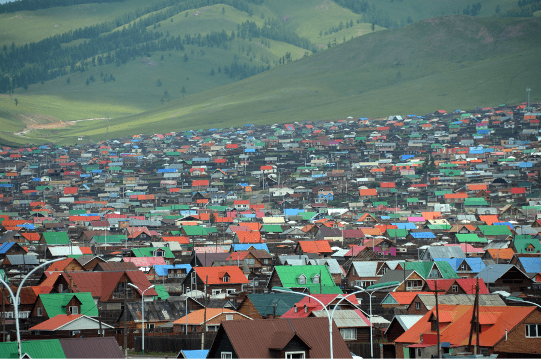
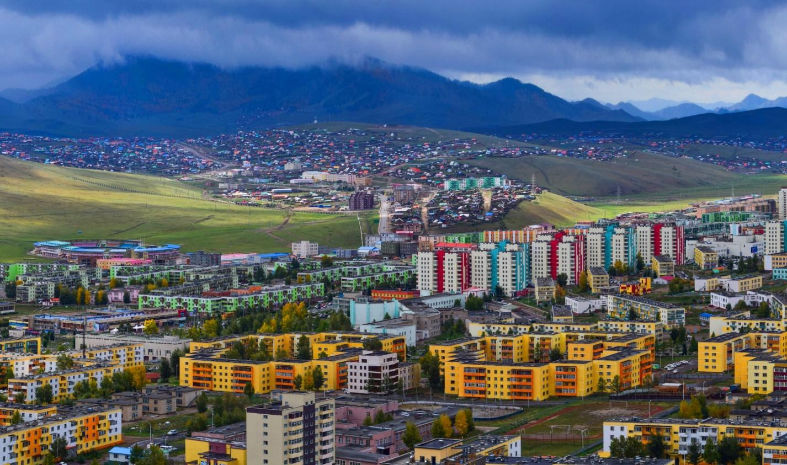
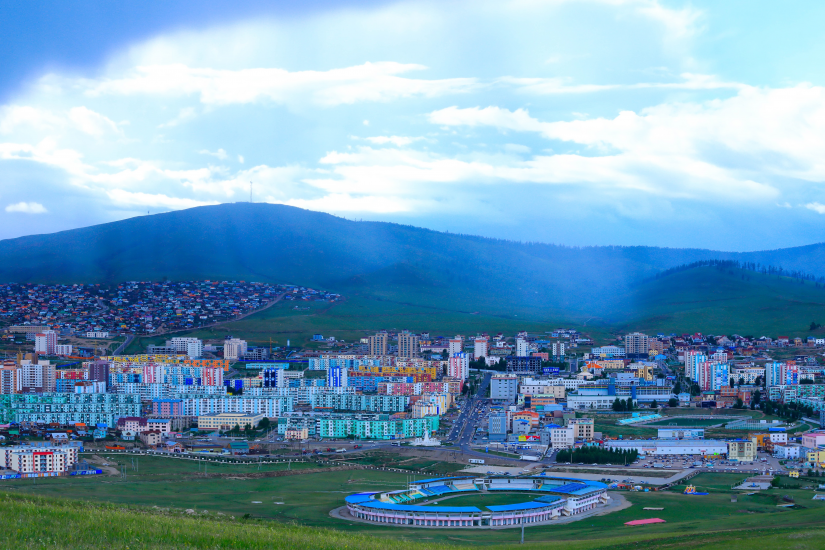
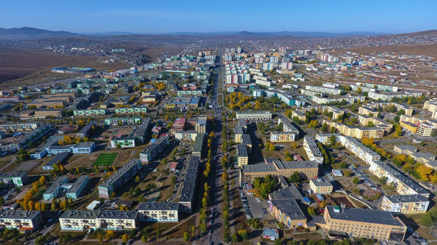
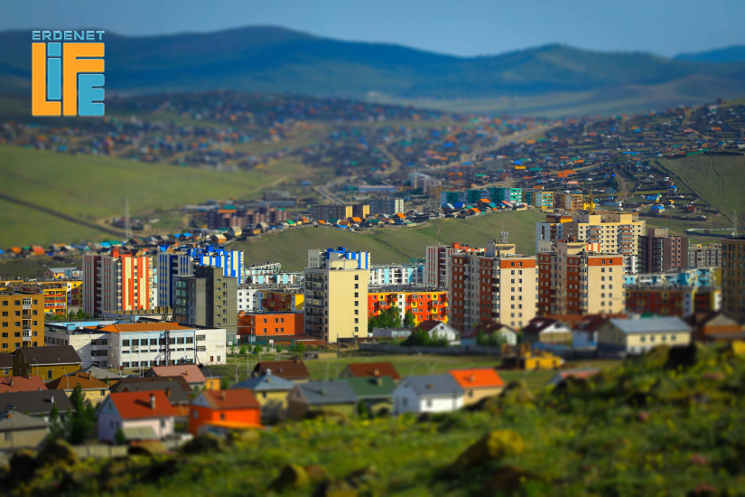
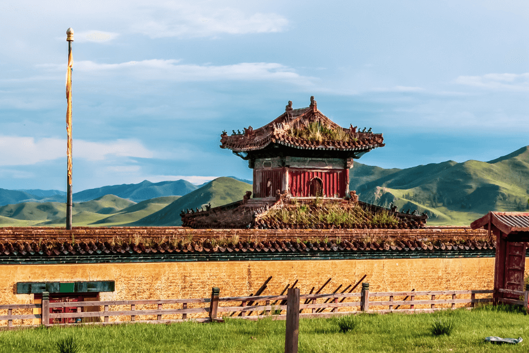

Эрдэнэт хотын тухай
1975 оны 12-р сарын 11-нд БНМАУ-ын Ардын Их Хурлын Тэргүүлэгчдийн тогтоолоор Булган
аймгийн Эрдэнэт хороог Эрдэнэт хот болгох шийдвэр гаргасан түүхтэй.
Эрдэнэт хотын шавыг Эрдэнэтийн овооны арын сайхан хөндийд 1973 онд тавьж, 1974 оноос Булган
аймгийн Эрдэнэт хороо нэртэйгээр засаг захиргааны нэгжийн хувьд үүсгэн байгуулжээ. Хурдан
тэлж, хүн ам нь огцом өссөн тул хороог 1976 онд Эрдэнэт хот болгон зохион байгуулснаар Монгол
Улсын гурав дахь том хот болж, хөгжлийнх нь шинэ үе эхэлсэн юм. Нутаг дэвсгэр, засаг захиргааны
нэгжийн өөрчлөлтөөр 1994 онд Орхон аймаг болжээ. Зууны манлай бүтээн байгуулалт Эрдэнэт хот нь
1976 оноос эдүгээ хүртэл хүн амын тоо, эдийн засагт оруулах хувь нэмрээрээ Монгол Улсын 3 дахь
том хот болтлоо дэвжин хөгжжээ.
Эрдэнэт хотын Ардын Хурлын Тэргүүлэгчдийн 1994 оны 6-р сарын 13-ны өдрийн 8 дугаар
тогтоолоор Баян-Өндөр сум нь Засаг захиргааны анхан шатны нэгж болох 13 багтай 58460
хүн амтай анх байгуулагдсаж байсан бол эдүгээ 26 багтай 100 гаруй мянган хүн амтай болж
өдгөө Монголын хамгийн олон хүн амтай, газар нутаг багатай онцлог сум болон өргөжин
хөгжин тэлсээр байна.





